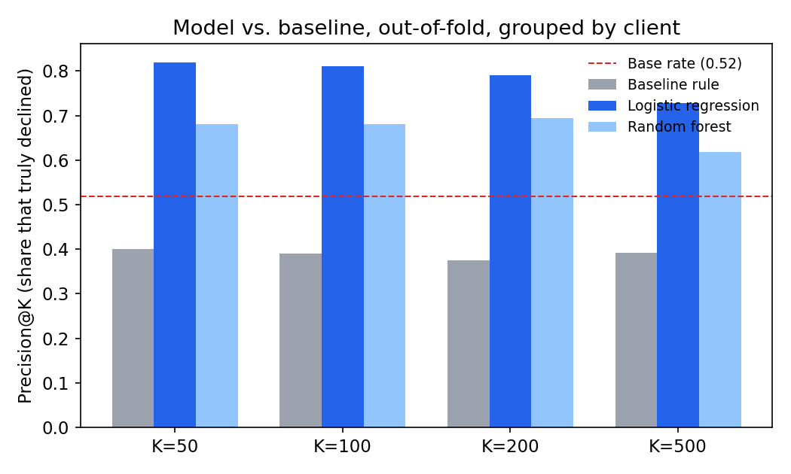
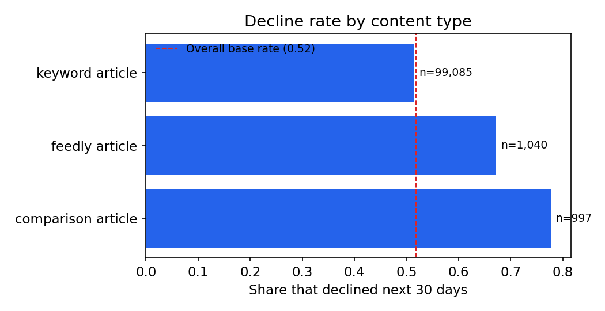

FlyRank ML Internship · Capstone Research Paper
This paper asks whether a page's future 30-day search-impression decline can be flagged earlier and more reliably than a hand-written editorial rule manages on its own. Using a pseudonymized slice of FlyRank's warehouse (March 2026 features, April 2026 outcomes, 101,122 pages across 38 clients), I built a frozen CTR-underperformance rule as a baseline, then trained a logistic regression and a random forest on point-in-time signals, validating both with client-grouped, out-of-fold splits after discovering that a single random split was unstable and that a "freshness" field in the source data was secretly future-dated. The model beat the baseline by roughly 1.4–1.6× the base rate at every cutoff tested; the baseline rule, useful for its original job, turned out to perform below random guessing at this specific one — a negative result reported here rather than hidden. The output is a ranked, reason-coded action queue an editorial team could use directly this week.
1. Introduction 2. Data 3. Methodology 4. Results 5. Limitations 6. Ranked Recommendations 7. Reproducibility 8. Acknowledgments & Data Credit
An editorial team reviewing content has limited time and a long list of pages. The question this project asks is narrow on purpose: among a client's already-published, already-visible pages, which ones are most likely to lose a meaningful share of their search impressions over the next 30 days — and does a simple hand-written rule or a trained model put the real decliners near the top of that list first?
This is deliberately framed as a fair rematch, not a foregone conclusion. The Week-4 baseline rule in this project was built to catch a different, related problem — pages with a wide gap between their search position and their click-through rate, worth a snippet or meta-description review. It is a legitimate tool for that job. This paper asks it to do a second job — forecast decline — on the same held-out data as the model, and reports the honest answer even where the rule falls short.
The decision this supports is concrete: given a ranked queue with reasons attached, which pages get a human look this week, and why. Nothing here claims to know why a page will decline, or that reviewing it will fix anything — only that some pages carry measurably higher statistical risk than others, going into the next month.
Data comes from the FlyRank/internship-warehouse release on Hugging Face —
a gated, pseudonymized warehouse (hashed client, content, and query IDs; no real client
names, domains, or search queries anywhere). Three tables were used: dim_clients,
dim_content, and two monthly partitions of fact_content_daily_performance
— March 2026 as the feature window, April 2026 as the outcome window. The decision point
is fixed at the end of March 31, 2026: nothing dated after that may enter a feature.
access_profile =
source_only_missing_client_dimension), a known gap the warehouse's own
documentation flags.gsc_data_start after March 1 — so "March impressions" means the same
thing for every remaining client. 45 of 104 clients passed this bar.content_updated_date, word_count, char_count
— see Methodology: these are current-state snapshot fields, not safe point-in-time
features for a March-dated decision.provider_used, model_used — the warehouse's own
data dictionary marks these "not a model feature."After every exclusion: 310,451 content items existed at an eligible client as of the decision date; 101,122 of those clear the visibility floor and make up the labeled population this paper reports on, spanning 38 distinct clients.
is_declining_next30 = 1 when April impressions fall more than 20% versus
March, for pages at or above the 100-impression floor. This is a genuine future outcome
— features observed through March 31, label determined by what actually happened in
April — not the same-window proxy label (trend_direction) the project's
starter dataset ships with.
content_updated_date in dim_content turned out to
be a current-state snapshot, not a point-in-time record — 88.3% of eligible
content rows carry an update date after the March 31 decision point. A naive
"days since last update" feature built from it would leak future editorial activity
straight into a March-dated decision. It was excluded, along with word_count
and char_count (mutable through the same undated edits) and
provider_used/model_used (excluded per the data dictionary's own
guidance). The only content-creation field kept, content_created_date, is a
one-time, immutable event.
score = visible(impressions≥500) × position_ok(0<avg_position≤20)
× low_ctr(ctr<0.5%) × impressions, producing one reason code and one action
label. Its original staleness tie-break term is dropped here — its only safe source
field is the leaky one described above.
Logistic regression (primary) and a random forest (comparison), both scored by precision@K — a ranking metric, since the real task is "who's first in the queue," not a plain yes/no classification. Rows are split grouped by client, since pages from the same client share hidden context a random split would leak across train and test.
GroupKFold(n_splits=5)
with pooled out-of-fold predictions: every row is scored only by a model that never
saw its client during training, and the final metric pools all five folds rather than
trusting one lucky or unlucky split.
All three methods are scored on the identical out-of-fold population (N = 101,122, base rate = 0.518) with the identical metric.

| K | Baseline rule | Logistic regression | Random forest |
|---|---|---|---|
| 50 | 0.400 | 0.820 | 0.680 |
| 100 | 0.390 | 0.810 | 0.680 |
| 200 | 0.375 | 0.790 | 0.695 |
| 500 | 0.392 | 0.728 | 0.618 |
Base rate across the full evaluated population: 0.518.
Logistic regression beats both the baseline and the random forest at every cutoff — roughly 1.4–1.6× the base rate. The baseline rule falls below the base rate at every K. That is not evidence the rule is broken at its actual job (finding CTR/snippet-fix candidates); it is evidence that "worth a CTR review" and "about to decline" are genuinely different questions, and the rule should not be sold as a decline forecaster.
High-volume pages mechanically tend to regress toward the mean, so a model leaning heavily on March impression volume could just be capturing that artifact rather than real signal. Removing that single feature and re-running the identical out-of-fold pipeline: precision@50 moves from 0.820 to 0.720 — a real, moderate drop, not the collapse toward the base rate that would confess pure mean-reversion. The feature contributes genuine signal.
Real engagement — sessions and clicks — pushes toward not declining;
pageviews moves the other way in the raw coefficients, which is a multicollinearity
artifact (these three move together) rather than a contradiction. The single strongest
coefficient belongs to content_type = comparison article, and the raw rates
back it up:

The model's clearest failures are instructive rather than embarrassing. Its false positives are almost all zero-CTR syndicated ("feedly") articles that the model reads as high-risk but that actually grew substantially in April — a missing interaction between content type and CTR the current feature set doesn't capture. Its false negatives are healthy, well-established pages with strong March click-through that still dropped hard in April, with nothing in their March numbers hinting at what was coming — a real ceiling on what point-in-time signals can see, not a fixable modeling bug.
The deployed output is a ranked, reason-coded action queue, built from the out-of-fold model score (a genuine held-out probability — no page is ever scored by a model that trained on its own client) plus the baseline's independent CTR flag riding alongside it.
| Action | Reason code | Rows | Meaning |
|---|---|---|---|
| priority_review | decline_risk_and_ctr_gap | 3,073 | Both signals agree — the strongest case for review |
| priority_review | decline_risk_only | 3,761 | Model-only catch — the baseline rule would have missed these entirely |
| monitor | ctr_gap_only | 38,085 | Worth a snippet/meta review; not flagged as high decline risk |
| no_action | no_flag | 56,203 | Neither signal fires |
The decline_risk_only row is the headline result made actionable: 3,761
pages (3.7% of the evaluated population) would have been invisible to the Week-4 rule
entirely, and are now in front of a reviewer this week instead of next quarter. The full
ranked queue (101,122 rows, one per evaluated page) is generated by
work/notebooks/capstone.ipynb and written to
work/outputs/capstone_action_playbook.csv on every run — it is not
committed to the repo directly (see Reproducibility), so it always reflects the notebook's
current, executed state rather than a stale export.
Every number and chart on this page is generated by
work/notebooks/capstone.ipynb,
executed top to bottom with no manual edits to its outputs. The full weekly build-up lives
in the same repo:
work/notebooks/w01_research_question.ipynb — lane selection and questionwork/notebooks/w04_baseline_score.ipynb — the frozen rule baseline, with its own signal checkswork/notebooks/w05_model.ipynb — the model, validation design, and error analysis this paper draws onwork/notebooks/capstone.ipynb — the self-contained pipeline behind this pagework/outputs/*.json — the metric "receipts" committed alongside each notebook
The notebooks query the warehouse live via DuckDB over hf:// when a Hugging
Face read token is available, and fall back to a locally cached extract of the same query
results otherwise — so a fresh clone with a valid token reproduces every number here
from scratch. Raw and intermediate data files are intentionally excluded from the repository
(a CI leak-guard blocks committing dataset files); only the notebooks and their small JSON
metric receipts are version-controlled.
Built on the FlyRank ML Internship dataset. Data and program: flyrank.ai.